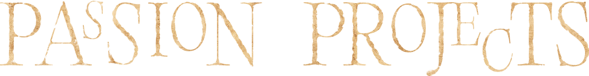
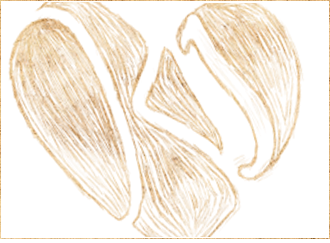
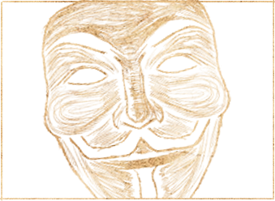
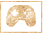
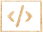

-
KJP

-
Kody Joliet Photos
I designed and built this starter website for my friend Kody as a foundation for sharing his photos, with placeholder content in the gallery until it's ready to be filled.
-
r8r.world

-
r8r.world
R8R is a satirical social media platform where you review your friends and family, and see what others have to say.
Make an account here! -
Scent

-
Scent
Scent is a game about a dog finding his missing owner.
Play it here! -
hiccup tool

-
Hiccup Tool
At Clean Coders, I often need to convert HTML into Hiccup since we work in Clojure. I built a simple tool to make that process easier.
Check it out here!